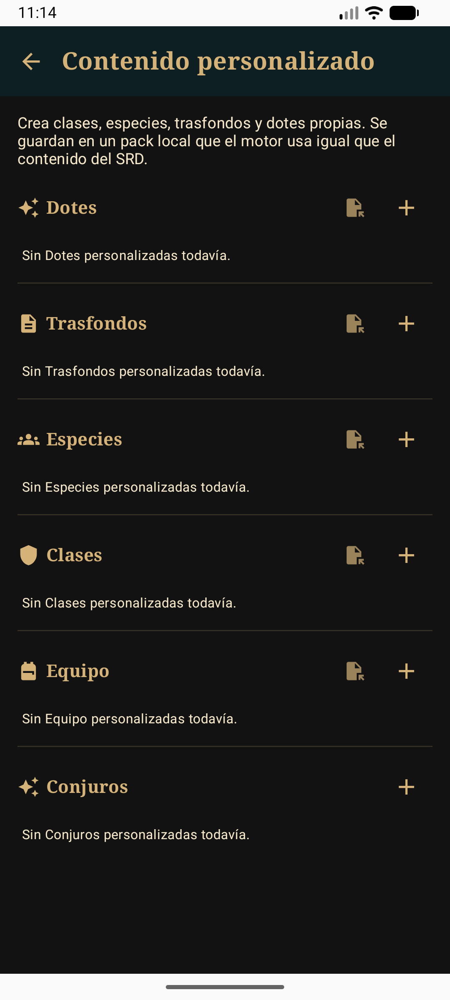
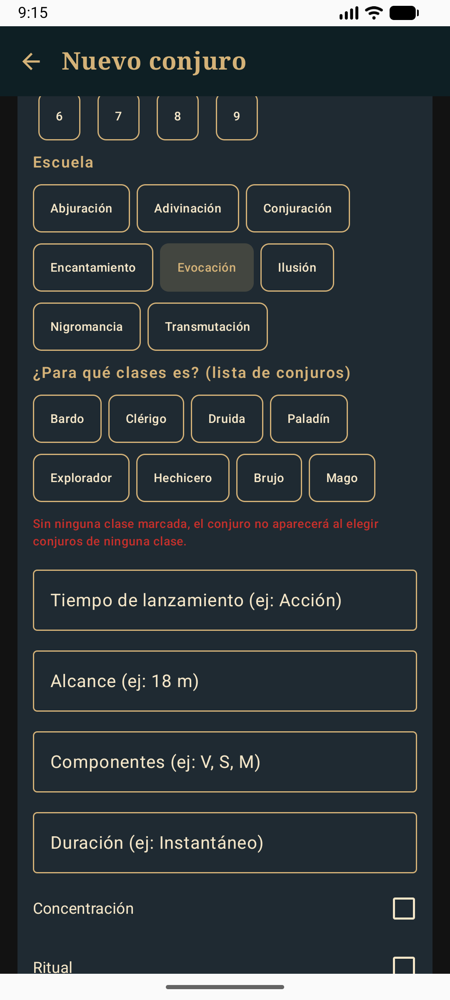
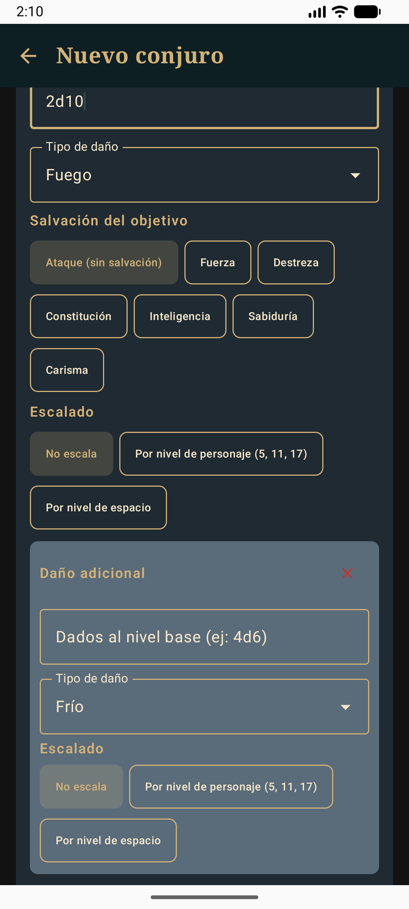
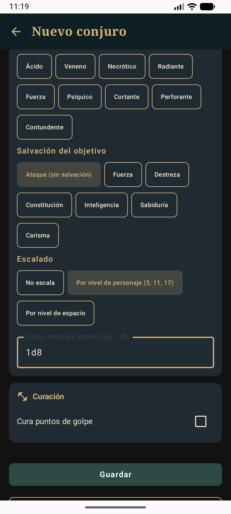
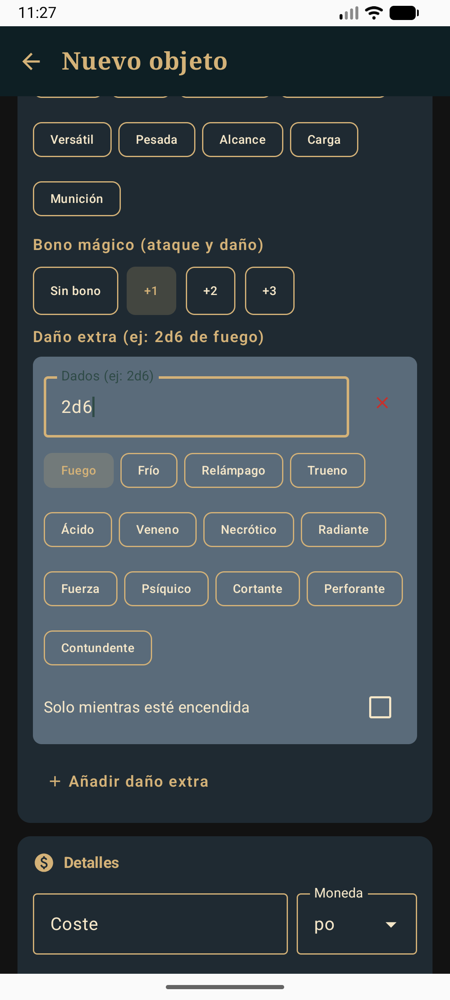
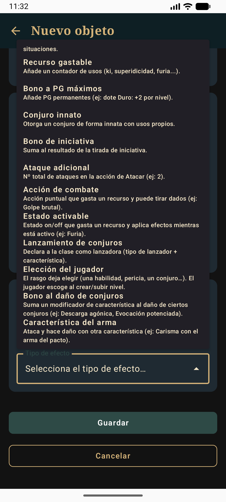
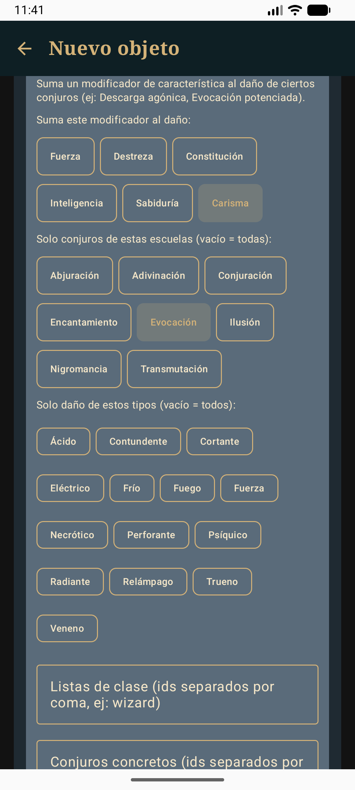
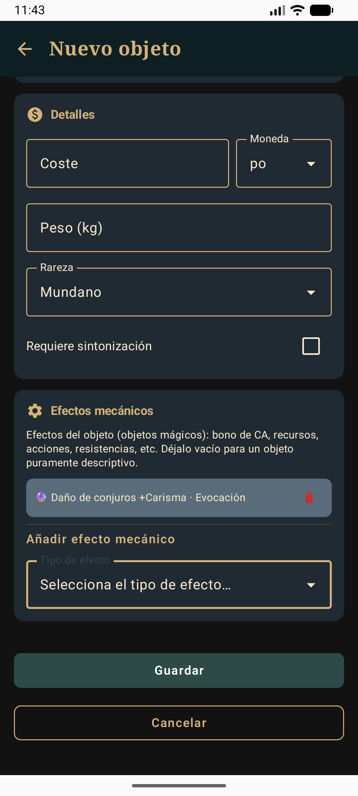

Todo lo anterior describe el formato JSON, pero no hace falta escribirlo a mano: la app trae un editor gráfico en Ajustes → Contenido personalizado. Lo que creas ahí se guarda en un pack local (user_custom) y el motor lo usa igual que el contenido del SRD. Las capturas son de la versión Android; en iOS es la misma pantalla.
En Ajustes toca Contenido personalizado. La pantalla tiene una sección por tipo: Dotes, Trasfondos, Especies, Clases, Equipo y Conjuros. Cada una tiene un botón + para crear, y cada objeto creado muestra Editar y Eliminar. Todas menos Conjuros tienen además un botón para importar un JSON suelto.

Truco o 1 a 9) y la escuela. Justo debajo, en ¿Para qué clases es?, marca las listas de clase que pueden usarlo (Bardo, Clérigo, Druida, Paladín, Explorador, Hechicero, Brujo, Mago; y las clases propias que tengan lanzamiento de conjuros): así aparece al elegir conjuros de esa clase. Si no marcas ninguna, el formulario te avisa en rojo y el conjuro no saldrá en ninguna lista. Después rellena tiempo de lanzamiento, alcance, componentes y duración, y marca Concentración o Ritual si aplica.
8d6).

El editor conserva los datos que no muestra (por ejemplo, un conjuro que se activa o que lanza varios dardos): si editas uno importado desde un pack, esos campos no se pierden.
+1, +2 o +3): se suma al ataque y al daño de esa arma.2d6 de fuego. Si el daño solo debe contar cuando el arma «está encendida» (como la Lengua de fuego), marca Solo mientras esté encendida: la ficha mostrará un botón para encenderla y apagarla.
El formulario de equipo tiene la sección Efectos mecánicos con Añadir efecto mecánico; los de dotes, especies, trasfondos y clases usan el mismo constructor en su apartado de efectos. Al tocar «Selecciona el tipo de efecto…» se abre la lista de tipos; cada uno trae una descripción corta.

Los tipos de magia más recientes son:
Ejemplo: un objeto que suma Carisma al daño de tus conjuros de Evocación. Elige el tipo «Bono al daño de conjuros», marca Carisma y la escuela Evocación, y toca Añadir efecto.

El efecto queda en la lista del objeto con un resumen; para quitarlo, toca el icono de eliminar. Para cambiarlo, elimínalo y créalo de nuevo.

El editor gráfico no cubre todo. Estas partes se hacen importando un pack JSON (§19):
activeEffect: Favor divino, Arma espiritual…) y los que lanzan varios dardos o rayos (count).DAMAGE_BONUS, ATTACK_BONUS, WEAPON_MASTERY, ROLL_TABLE, COMPUTED_STAT, ADVANTAGE, etc.).masteryProperty, range, ammunitionType y fixedDamage.Si importas un objeto con esos datos y lo editas en la app, los campos que el formulario no muestra se conservan al guardar.